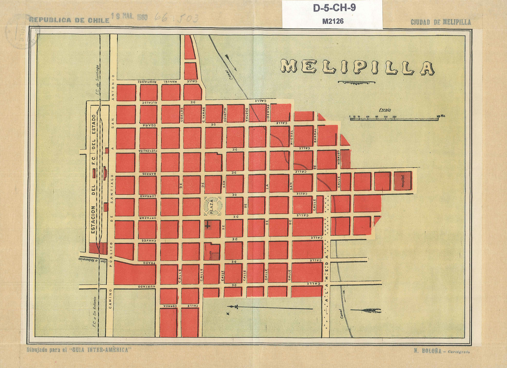
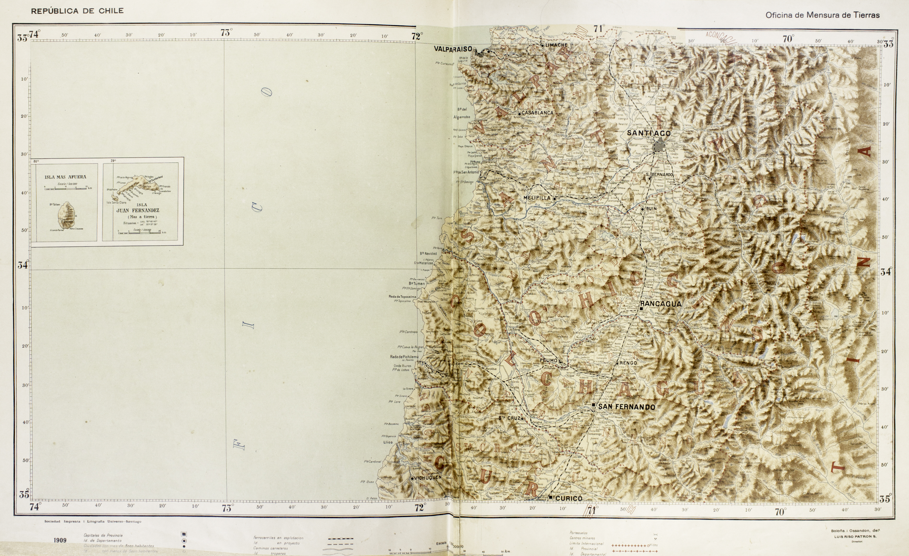
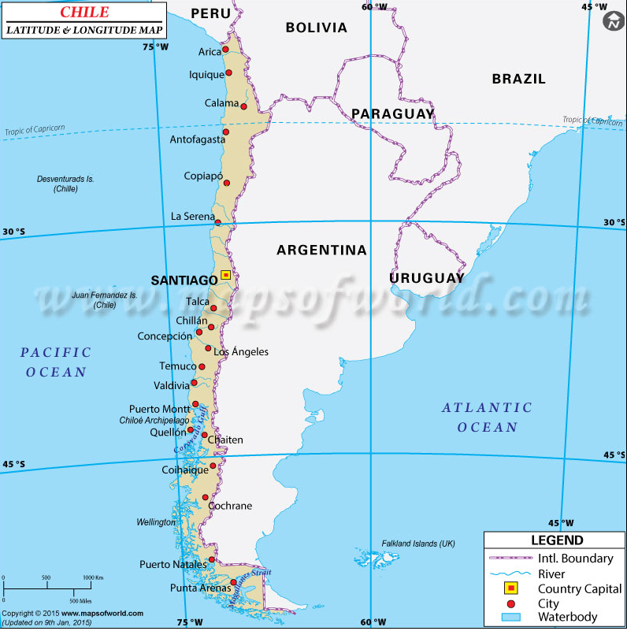
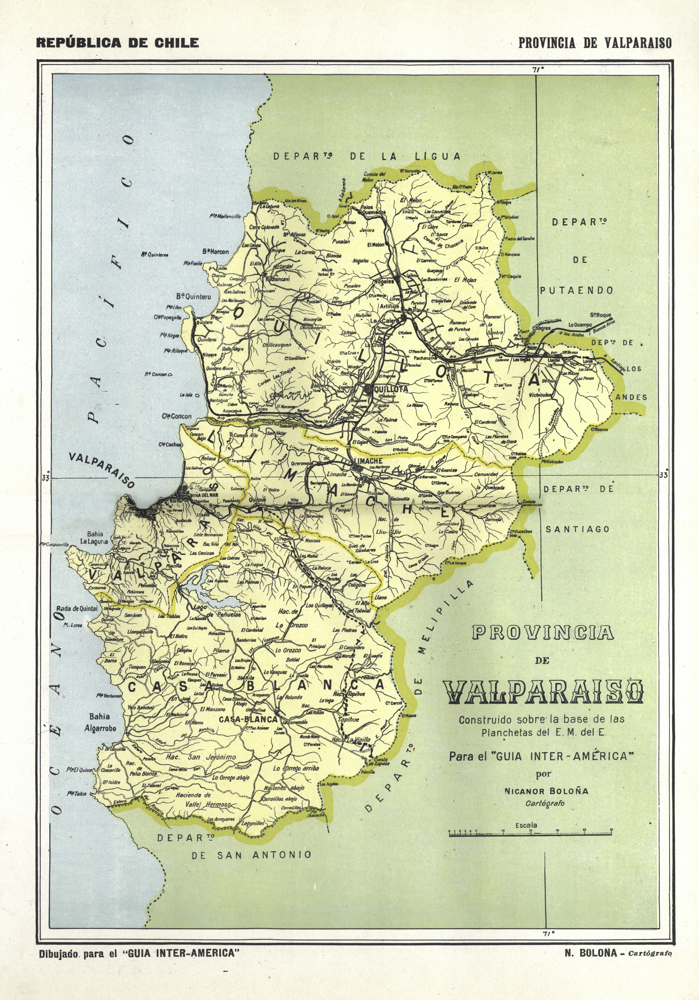
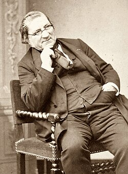
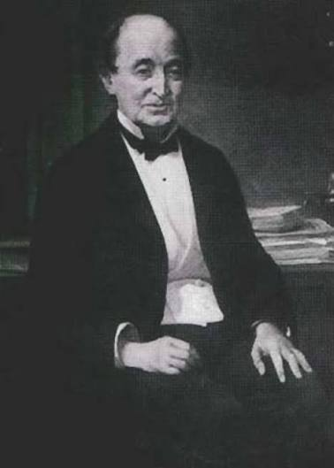

Melipilla (1923)

- Author / Cartographer
- Nicanor Boloña
- Year Published
- 1923
- Type
- Urban plan
- Dimensions
- 26 × 36 cm
- Collection
- Urban Plans, Inter-American Guide
Explore maps that document Chile's cities, regions, and geography, along with the people who helped map and study the country.




Chile lies along the western edge of South America. It stretches approximately 2,700 miles from its border with Peru, near latitude 17°30′ S, to Cape Horn, near latitude 56° S—about 400 miles north of Antarctica.
The country averages about 110 miles in width. It is widest near Antofagasta, at approximately 217 miles, and narrowest near Puerto Natales, at about 9.6 miles.
Chile has been an independent sovereign republic since February 12, 1818.

French naturalist Claudio Gay was hired by the Chilean government in 1830 to study the country's territory and natural history. His expeditions across Chile informed his Historia Física y Política de Chile, which included an atlas with a map of the country. He also helped establish the National Museum of Natural History.
Learn more at Memoria Chilena
Polish geologist and mineralogist Ignacio Domeyko arrived in Chile in 1838. His scientific expeditions in the Andes, Atacama, and Araucanía contributed to knowledge of Chile's geology and geography. He later served as rector of the University of Chile from 1867 to 1883.
Learn more at Memoria Chilena